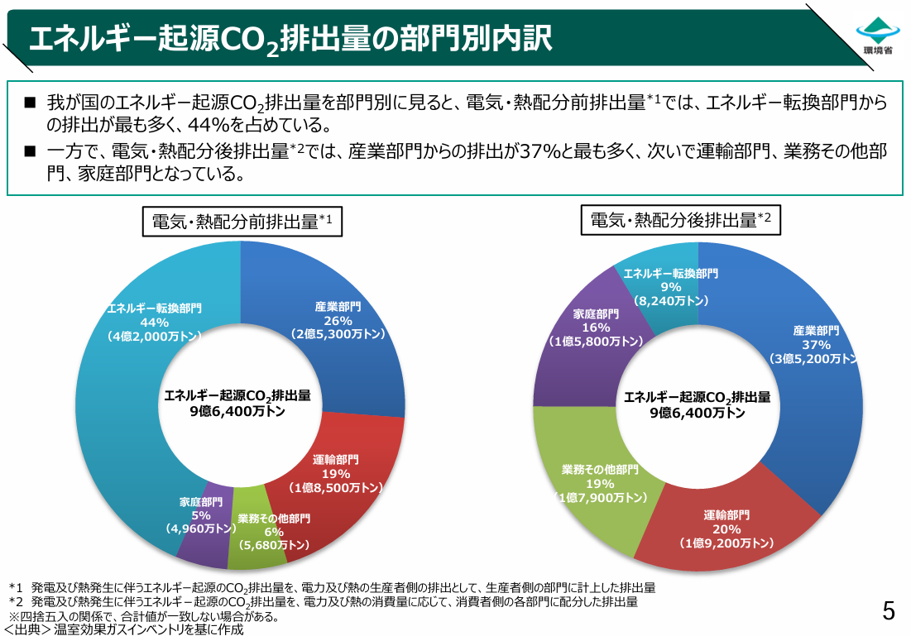
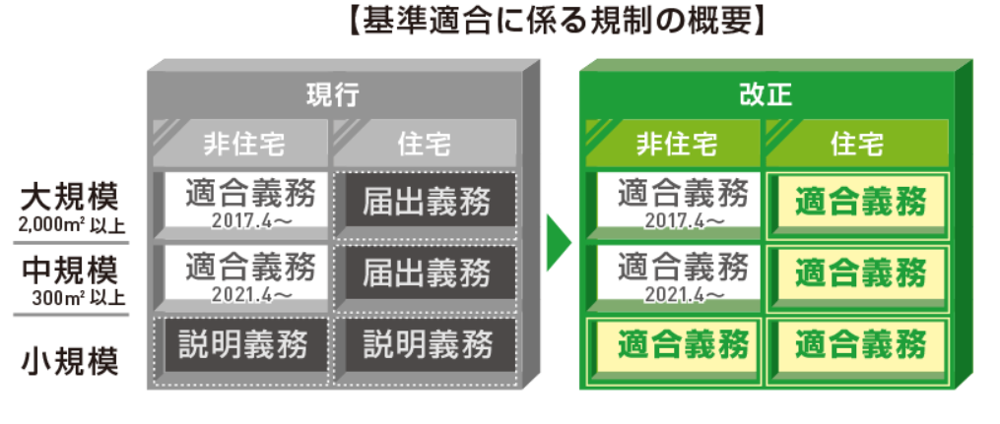

2025年4月から、原則としてすべての新築住宅・非住宅に対して、省エネ基準への適合が義務化されました。 国土交通省も「原則全ての新築住宅・非住宅への省エネ基準適合の義務付け」として、令和7年4月1日施行を公表しています。
ただし、本質は「法律だから対応する」ではありません。 省エネ性能の高い建物は、資産価値の維持、補助金・融資、テナントや購入者への説明、企業のESG評価にも関わる領域になっています。
ZEH、BELS、長期優良住宅、省エネ適判。これらは別々の制度ではなく、これからの建築が向かう方向につながっています。
1. 省エネ計算とは何か
省エネ計算とは、その建物がどれだけエネルギーを消費するかを数値で確認するものです。 大きく分けると、確認するのは「外皮性能」と「一次エネルギー消費量」です。
外皮性能
外皮性能は、建物の「包み込む性能」です。 断熱材、窓性能、Low-Eガラス、屋根、壁、床、玄関ドアなどをもとに、 どれだけ熱を逃がさないか、どれだけ日射を防ぐかを確認します。
一次エネルギー消費量
一次エネルギー消費量は、建物の「使うエネルギー」です。 空調、換気、給湯、照明、昇降機、太陽光発電などを含め、 年間でどれだけエネルギーを使うかを確認します。
ここで重要なのは、省エネ計算は確認申請のためだけの数字ではないということです。 この数値は、光熱費、快適性、テナント価値、売却時の評価、補助金活用に直結します。
つまり、省エネ計算は、建物の未来価値を設計するための数字です。
2. なぜ今、義務化されたのか
理由は明確です。地球温暖化が、もう未来の話ではないからです。
世界では、気温上昇、異常気象、豪雨、猛暑、災害の激甚化が進んでいます。 その大きな原因が温室効果ガスであり、特にCO₂です。 そしてその多くは、石油、石炭、天然ガスといった化石燃料を使うことで発生します。
建物で電気を使う。空調を回す。給湯を使う。 それ自体が、地球温暖化とつながっています。
だからこそ、建物の省エネ性能を上げることは、単なる設計ではなく、社会全体の課題になりました。
3. 建築分野のCO₂排出割合
「建築って、そんなに関係あるの？」と思われることがあります。 答えは、非常に大きいです。
環境省の資料では、家庭部門と業務その他部門を合わせると、 日本全体のエネルギー起源CO₂排出量の約3割を占めます。

| 部門 | 内容 | 割合 |
|---|---|---|
| 家庭部門 | 住宅 | 約16％ |
| 業務その他部門 | オフィス・商業施設など | 約19％ |
| 合計 | 建築分野全体 | 約35％ |
※割合はエネルギー起源CO₂排出量における部門別割合をもとに整理しています。資料年度や集計区分により数値は変動します。
建物は一度建てると、何十年も使われます。 設計時の判断が、10年後、20年後、30年後まで影響します。 だからこそ、設計段階で省エネ性能をどう考えるかが重要になります。
4. 2025年4月 義務化の対象
以前は、建物の規模や用途によって、適合義務、届出義務、説明義務などの扱いが分かれていました。 しかし2025年4月以降は、原則としてすべての新築住宅・非住宅に省エネ基準への適合が求められます。

| 項目 | 旧制度 | 2025年4月以降 |
|---|---|---|
| 対象 | 建物の規模や用途により扱いが分かれていた | 原則すべての新築住宅・非住宅が対象 |
| 住宅 | 一定規模では届出義務・説明義務など | 省エネ基準への適合義務 |
| 非住宅 | 一定規模以上を中心に適合義務 | 規模にかかわらず原則適合義務 |
| 実務への影響 | 案件ごとに対象判断が必要 | 基本的に省エネ確認を前提に進める |
実務上は、「対象かどうか」よりも、 「どの段階で仕様を固めるか」「どの資料をいつ揃えるか」が重要になります。 省エネ基準適合義務は、申請直前に確認するものではなく、基本設計から意識しておくべき前提です。
5. ESG・SDGs・GXと建築
ESG、SDGs、GXは建築とも直結しています。 企業は今、「利益を出しているか」だけではなく、 「環境や社会にどう向き合っているか」も見られています。
建物も同じです。 環境性能の高いオフィス、ZEH住宅、BELS取得建物、脱炭素対応施設は、 企業の姿勢そのものを表します。
建物の環境性能は、融資、採用、投資判断、テナント誘致、ブランド価値に影響します。 これからの建物は、企業のESGを表す重要な資産になっていきます。
6. ZEH・BELS・長期優良住宅
ZEH、BELS、長期優良住宅、省エネ適判は、別々に見える制度ですが、目指す方向はつながっています。
| 制度 | 役割 | 実務上の意味 |
|---|---|---|
| 省エネ適判 | 最低基準を満たす | 建築確認・着工に関わる基本条件 |
| BELS | 性能を見える化する | 建物の省エネ性能を第三者評価として示す |
| ZEH | 高断熱・省エネ・創エネ | 住宅の高性能化、補助金活用と関係 |
| 長期優良住宅 | 長く使える住宅価値 | 認定、税制、資産価値と関係 |
省エネ基準適合義務は、スタート地点です。 その先に、性能を見える化するBELS、より高性能なZEH、長く使える価値を示す長期優良住宅があります。 どの制度を使うかは、建物の用途、施主の目的、補助金活用、販売戦略によって変わります。
7. 2050年カーボンニュートラル
日本は2050年ネット・ゼロ、カーボンニュートラルの実現を目指しています。 環境省は、2035年度60％削減、2040年度73％削減という新たな目標を示し、 2050年ネット・ゼロに向けた直線的な経路を進む方針を示しています。
原則すべての新築住宅・非住宅に省エネ基準適合義務化
温室効果ガス46％削減目標。省エネ基準をZEH・ZEB水準へ引き上げる方向
温室効果ガス60％削減目標
温室効果ガス73％削減目標
ネット・ゼロ、カーボンニュートラルの実現
今後は、ZEBの拡大、非住宅のさらなる省エネ性能強化、LCCO₂、開示義務、説明責任など、 建築に求められる視点はさらに広がっていくと考えられます。 省エネ基準適合義務はゴールではなく、これからの建築が進むためのスタート地点です。
8. 資産価値との関係
これからは、建てるだけでは弱い時代です。 問われるのは、その建物が将来も選ばれるかどうかです。
| 性能が低い建物 | 性能が高い建物 |
|---|---|
| 光熱費が高くなりやすい | ランニングコストを抑えやすい |
| 空室・売却時の不利につながる可能性 | テナント・購入者に説明しやすい |
| 将来改修コストが増える可能性 | 早い段階から性能を確保しやすい |
| 評価されにくい | 融資・補助金・企業評価で有利に働く可能性 |
※制度、融資、補助金の活用可否は案件条件や年度要件により異なります。
9. ZeroEmiWorksが目指すこと
私たちは、ただ計算を行うだけの省エネ計算代行会社ではありません。
目指しているのは、建築の実務を止めず、未来価値を設計する人の右腕となる会社です。
BELS、ZEH、長期優良住宅、省エネ適合性判定、補助金申請。 制度名ひとつひとつには、それぞれ明確な目的があります。
だからこそ、制度を正しく理解し、どこまで対応すべきかを判断することが重要です。
私たちが大切にしているのは、どこから着手すべきか、何を優先すべきか、 どこにリスクがあるか、どうすれば手戻りを減らせるかを整理することです。
制度対応をするためではなく、その建物がこれからも選ばれ続けるために何が必要かを考えること。
制度は、手段です。目的は、建物の価値を守り、高めること。 そこまで含めて支えることが、私たちの役割だと考えています。
10. まずは相談する
図面がまだ揃っていなくても大丈夫です。
- この案件は何が必要なのか。
- どこから着手すべきか。
- BELSを取得する意味があるのか。
- ZEHまで見据えるべきか。
- 長期優良住宅にするべきか。
- 補助金を活用できる可能性があるのか。
最初に整理するだけで、設計実務は大きく変わります。
建築を止めないこと。未来に残る価値をつくること。 それは、計算だけでは解決できません。 だからこそ、私たちは実務の整理から一緒に考えます。
これからの建築を、より良い方向へ進めていくために。 ぜひ一緒に取り組んでいきましょう。
Consultation
まずは、状況を聞かせてください。
省エネ計算、BELS、ZEH、長期優良住宅、補助金申請。 どこから整理すべきか、一緒に確認します。
- 案件ごとに必要な制度整理
- 確認申請・着工までの実務段取り
- 補助金や評価制度を見据えた優先順位